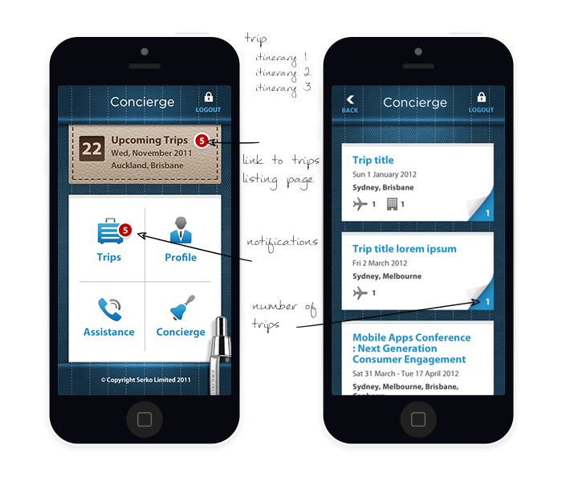

The Result
The final product mixed beautiful design with a functional application that truly serves a Serko’s customer. The client was very happy not only with the features and the design, but the level of precision the application offered. Serko are excitedly continuing development on the application. They have showcased the prototype work to date to key clients including Microsoft and the feedback has been overwhelmingly positive. This application design supported theming to enable instances to be branded with corporate client logos and identity. In targeting a corporate market, the design leveraged the best of classic and contemporary within the business world.